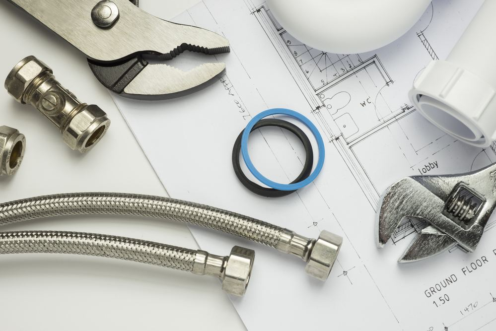

פתיחת סתימותBlocked drains
כיורים, מקלחות, אסלות וניקוזים.Sinks, showers, toilets and floor drains.
קונספט לדוגמה שנבנה עבור חגי שפיץ אינסטלטור בקריות · זה אינו האתר הרשמי של העסקA sample concept built for Hagai Shpitz, plumber in the Krayot · This is not the business’s official website
תמונה להמחשהIllustrative photo
סתימות, צנרת ביוב ותיקוני אינסטלציה, מהנרייטה סולד 9 בקריית ביאליק.Blocked drains, sewer lines and plumbing repairs, from 9 Henrietta Szold St, Kiryat Bialik.
מתחילים בפתח.It starts at the drain.
כיור, מקלחת, אסלה, או שוחת הביוב בחצר.A sink, a shower, a toilet, or the sewer pit in the yard.
הספירלה נכנסת.The cable goes in.
כבל קפיצי ארוך, שמסתובב ומתקדם לעומק הצנרת.A long spring cable that turns as it works its way deep into the pipe.
עד מקור הבעיה.Down to the source.
מאתרים איפה הסתימה מתחילה, לא רק מה שרואים בפתח.Finding where the blockage begins, not only what shows at the opening.
מכאן, בקריות.From here, in the Krayot.
הנרייטה סולד 9, קריית ביאליק.9 Henrietta Szold St, Kiryat Bialik.
מהכיור במטבח ועד קו הביוב של הבניין.From the kitchen sink to the building’s sewer line.
כיורים, מקלחות, אסלות וניקוזים.Sinks, showers, toilets and floor drains.
בבית, בבניין ובחצר.Home, building and yard.
הכלי לפי הקו.The tool to suit the line.
איפה זה באמת מתחיל.Where it really begins.

ברזים, צנרת, חיבורים ונזילות בבית.Taps, pipes, fittings and leaks at home.
מסמנים, בוחרים עיר, וההודעה לחגי נכתבת לבד.Tap, pick your town, and the message to Hagai writes itself.
ממליצה בחום. מענה שירות מהיר. הגיע עוד באותו היום איתר את מקור הבעיה. סידר סתימה מסובכת. מקצועי ואמין…
Highly recommend. Quick response. He came the same day, found the source of the problem and cleared a complicated blockage. Professional and reliable…
בחור מקצועי (וחתיך). בא מהר בבוקר ערב חג ועשה את העבודה באופן מקצועי ונקי תוך כדי הסברים על כל שלב עם סיכויי ההצלחה והסיכונים. תודה רבה רבה!
Professional and reliable. Came quickly on Holiday eve and performed the work neatly while explaining all the details and risks. Thank you!
אין על חגי שפיץ האינסטליור. אדיב עם ידע ורצון לעזור. תמיד נעזר בו. עבד אצלינו ומאוד מאוד מרוצים מעבודתו ונעים הליכות.
No one beats Hagai Shpitz the plumber. Courteous, knowledgeable and willing to help. We always turn to him. He worked at our place and we are very, very pleased with his work, and he’s a pleasure to deal with.
הגיע בהתראה של מהרגע להרגע תיקן את התקלה בזריזות ומקצועיות.
Came at a moment’s notice and fixed the problem quickly and professionally.
בגוגל העסק רשום כפתוח 24 שעות, בכל ימות השבוע.Google lists the business as open 24 hours, every day of the week.
בהנרייטה סולד 9, קריית ביאליק. העסק רשום בגוגל בשם „חגי שפיץ אינסטלטור בקריות”.At 9 Henrietta Szold St, Kiryat Bialik. On Google the business is listed as “Hagai Shpitz, plumber in the Krayot”.
בביקורות בגוגל כתבו על סתימה בצנרת הביוב, בשירותים ובמקלחת, ועל סתימה מסובכת שחגי סידר.In Google reviews customers wrote about a blocked sewer pipe, toilet and shower, and a complicated blockage Hagai cleared.
בטלפון או בוואטסאפ, לאותו מספר: 050-869-7762.By phone or WhatsApp, on the same number: 050-869-7762.